Javascript must be enabled for this page to work! This page does not contain any trackers or ads. The website source is available on
Github
Canvas does not seem to be supported by your browser! You can try using
Google Chrome
or
Mozilla Firefox
instead.
    